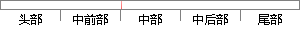

例如，对于隐藏层节点4来说，计算方法如下：
片段位置图

相似结果|
1
原句片段：例如，对于隐藏层节点4来说，计算方法如下：
相似片段 1：例如,对于隐藏层节点4来说,计算方法如下: 最后,更新每个连接上的权值: 类似的,权重的更新方法如下: 偏置项的输入值永远为1。例如,节点4的偏置项应该按照下面的...
相似片段 2：例如,对于隐藏层节点4来说,计算方法如下: 最后,更新每个连接上的权值: 类似的,权重的更新方法如下: 偏置项的输入值永远为1。例如,节点4的偏置项...
相似片段 3：对模型、目标函数、优化算法这些概念有了一定程度的理解,而且已经会训练单个的...例如,对于隐藏层节点4来说,计算方法如下: ? ? 最后,更新每个连接上的...
相似片段 4：例如,对于隐藏层节点4来说,计算方法如下: 最后,更新每个连接上的权值: 式 其中,是节点到节点的权重,是一个成为学习速率的常数,是节点的误差项,是节点传递给...
相似片段 5：对于隐藏层节点, 式 其中,是节点的输出值,是节点到它的下一层节点的连接的权重,是节点的下一层节点的误差项。例如,对于隐藏层节点4来说,计算方法如下: 最后...
相似片段 6：对于隐藏层节点,式 其中, 是节点 的输出值, 说,计算方法如下: 是节点 到它...例如,对于隐藏层节点4来 最后,更新每个连接上的权值:式 其中, 是节点 到节点...
相似片段 7：例如对于如下的4层神经网络: 计算的方法如下: 有...我们需要计算每个节点的梯度,这里通过反向传播算法达到...这里的两层网络是指隐藏层使用sigmoid单元、输出层...
相似片段 8：如下图所示:计算一个神经元的输出的方法和计算一个...输出层之间的层叫做隐藏层,因为它们对于外部来说是...比如,我们可以看到隐藏层的节点4,它和输入层的三个...
|
※ 片段修改建议 ※
近似词参考：- 例如：比方
- 对于：对 对付
- 隐藏：埋没 潜藏 隐蔽 暗藏
- 来说：来讲
- 如下：以下
系统自动生成语句：比方，对埋没层节点4来讲，计算方法以下：
注：本片段修改建议为系统自动生成，仅供参考。